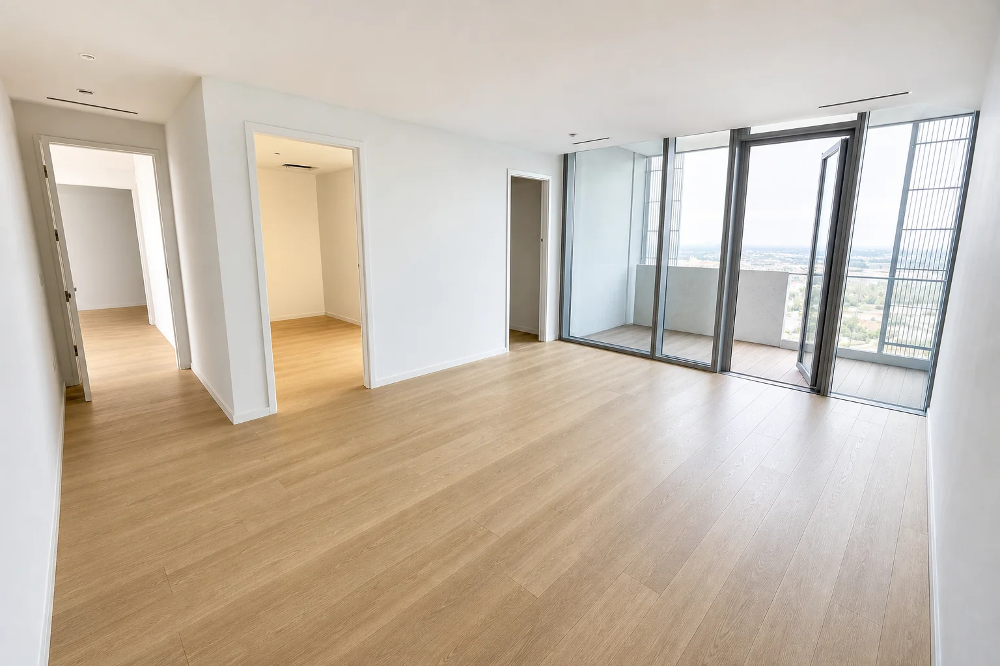

subfloor leveling
Subfloor Leveling Penticton
Great floors are built before the finish goes down. Leveling, patching, moisture checks, and repair prevent problems customers feel every day.
Pricing: Self-leveling from $4.00–$10.00/sq ft depending on severity.
Request a quote
Problems this solves
- Uneven concrete or wood subfloors that make finished flooring feel cheap.
- Ugly transitions, doorways, trim gaps, and rushed cuts.
- Material already purchased but no installer you trust to do the prep correctly.
- Renovation timing where the job needs to be clean, organized, and finished properly.
Process
- Review photos, measurements, material, and timeline.
- Check subfloor, moisture risk, layout, transitions, stairs, and baseboard details.
- Quote labour clearly before work starts.
- Install with prep-first sequencing and clean finish details.
Send photos for a faster estimate.
Text photos, square footage, product details, city, and timeline for a faster estimate.
Reveal verified contact details
Quick spam check to protect contact info from robocrawlers.
Phone and email appear automatically after verification.